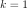
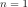
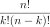

Combinations¶
-
class
Combinations(*args)¶ Combinations generator.
- Available constructors:
Combinations()
Combinations(k, n)
- Parameters
- kinteger
The cardinal of the subsets
- ninteger
The cardinal of the base set
See also
Notes
In the first usage, the generator is built using the default values

,
.In the second usage, the generator produces all the subsets with k elements of a base set with n elements. The subsets are produced as a collection of
Indicesin lexical order, the elements of each subset being sorted in increasing order.The number of indices generated is:

The combinations generator generates a collection of
Indiceswhere:Examples
>>> import openturns as ot >>> tuples = ot.Combinations(2, 5) >>> print(tuples.generate()) [[0,1],[0,2],[0,3],[0,4],[1,2],[1,3],[1,4],[2,3],[2,4],[3,4]]#10
Methods
generate(self)Generate the combinatorial sequence.
getClassName(self)Accessor to the object’s name.
getId(self)Accessor to the object’s id.
getK(self)Accessor to the cardinal of the subsets.
getN(self)Accessor to the cardinal of the base set.
getName(self)Accessor to the object’s name.
getShadowedId(self)Accessor to the object’s shadowed id.
getVisibility(self)Accessor to the object’s visibility state.
hasName(self)Test if the object is named.
hasVisibleName(self)Test if the object has a distinguishable name.
setK(self, k)Accessor to the cardinal of the subsets.
setN(self, n)Accessor to the cardinal of the base set.
setName(self, name)Accessor to the object’s name.
setShadowedId(self, id)Accessor to the object’s shadowed id.
setVisibility(self, visible)Accessor to the object’s visibility state.
-
__init__(self, *args)¶ Initialize self. See help(type(self)) for accurate signature.
-
generate(self)¶ Generate the combinatorial sequence.
-
getClassName(self)¶ Accessor to the object’s name.
- Returns
- class_namestr
The object class name (object.__class__.__name__).
-
getId(self)¶ Accessor to the object’s id.
- Returns
- idint
Internal unique identifier.
-
getK(self)¶ Accessor to the cardinal of the subsets.
- Returns
- kinteger
The cardinal of the subsets.
-
getN(self)¶ Accessor to the cardinal of the base set.
- Returns
- ninteger
The cardinal of the base set.
-
getName(self)¶ Accessor to the object’s name.
- Returns
- namestr
The name of the object.
-
getShadowedId(self)¶ Accessor to the object’s shadowed id.
- Returns
- idint
Internal unique identifier.
-
getVisibility(self)¶ Accessor to the object’s visibility state.
- Returns
- visiblebool
Visibility flag.
-
hasName(self)¶ Test if the object is named.
- Returns
- hasNamebool
True if the name is not empty.
-
hasVisibleName(self)¶ Test if the object has a distinguishable name.
- Returns
- hasVisibleNamebool
True if the name is not empty and not the default one.
-
setK(self, k)¶ Accessor to the cardinal of the subsets.
- Parameters
- kinteger
The cardinal of the subsets.
-
setN(self, n)¶ Accessor to the cardinal of the base set.
- Parameters
- ninteger
The cardinal of the base set.
-
setName(self, name)¶ Accessor to the object’s name.
- Parameters
- namestr
The name of the object.
-
setShadowedId(self, id)¶ Accessor to the object’s shadowed id.
- Parameters
- idint
Internal unique identifier.
-
setVisibility(self, visible)¶ Accessor to the object’s visibility state.
- Parameters
- visiblebool
Visibility flag.